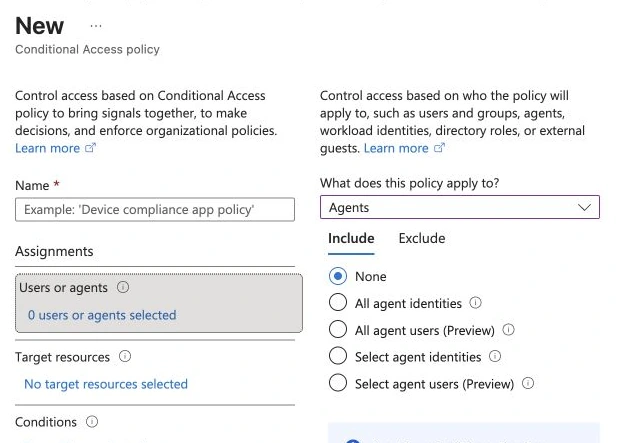

How to apply Conditional Access to a helpdesk agent in Entra
Which Conditional Access policy applies to a helpdesk agent? That depends on what the agent is doing. In the morning it might open a file for a signed-in employee. At night the same agent might read a queue using its own identity. In this blog weâll follow both sign-ins.
I opened the policy wizard in my Modern Device Management tenant and checked the agent options again on 13 November. Security defaults were active there, so I closed the wizard without saving. You can still see in the screenshot where to select the identity for your own test.
1. Find out who requested the token
Microsoft distinguishes delegated on-behalf-of access, autonomous agent identities and agent-user accounts. They need different Conditional Access targets. One workload may use more than one of these flows. Agent authentication and policy evaluation
For the same helpdesk agent, work through the two runs separately.
- Morning file request. If the token was issued on behalf of the employee, look up that userâs policy.
- Night queue job. If the job requested the token as the agent, look up the agent identity.
- Agent-user account. If either run actually signed in with an agent-user account, look for that account in its dedicated assignment.
Follow the code path that requests the token, then look up that sign-in. A chat window can use different credentials from the ones you expect, and the same is true of a background job. Leave bearer tokens out of the logs.
For each run, write down the app and runtime, the principal ID and the resource named in the token request. Add how the app gets its token, whether it uses delegated or application permissions and who owns the credential. Youâll need that first ID when we open Conditional Access.
2. Select the identity in Conditional Access
Take the identity from the first step into the policy wizard. The portal offers one target for agent identities and another for agent users. For an agent-user account, open the dedicated assignment. An ordinary All users assignment does not automatically cover it. Agent policy model


What do you need for your own pilot? Microsoft lists the Conditional Access Administrator role and the applicable Agent 365 and Conditional Access entitlements. Its guide describes Agent 365 with at least Entra ID P1 or Microsoft 365 E3, or the Microsoft 365 E7 package. Check which agreement covers your tenant before you start. Current targeting prerequisites
For the first policy, select the one identity and the one resource from your example. You can then find out what happens to the helpdesk queue without including payroll and reporting agents in the same test.
Which controls can this agent satisfy?
A headless cloud process cannot satisfy a human MFA interaction just because that requirement is familiar from employee policies. A compliant-device requirement also needs a supported device context. The current agent-user guide limits that Intune enrollment path to Windows 365 Cloud PCs for Agents; compliant-network policies additionally need the Global Secure Access client. Scope these policies with Agent execution environments (Preview) to endpoint-initiated sessions. Applying them without that boundary can block cloud-native agents that have no path to device or network compliance. Supported agent targeting, agent-user policy guidance

For our night job, check which resources its application identity can use and which risk controls it supports. If your second test uses an agent-user account on a managed endpoint, check the device and network requirements there.
In my tenant I stopped at this point because security defaults were active. Microsoft lists them as incompatible with these policies. If you plan to replace them in your tenant, prepare the replacement policies, emergency access and rollback together and have the change approved. Compatibility guidance
3. Make a fresh sign-in and follow it to the ticket system
Letâs start with the file from the morning. Put the employee identity, the fileâs resource and the result you expect into your notes. Weâll fill in what actually happened after the next sign-in.
{
"case": "agent-queue-read-from-approved-runtime",
"principal_id": "record-the-tested-agent-object-id",
"resource": "record-the-target-enterprise-application",
"flow": "autonomous",
"policy_id": "record-the-pilot-policy-id",
"expected_decision": "allow",
"observed_decision": null,
"sign_in_correlation_id": null,
"downstream_result": null
}I use that JSON for test notes. The observed fields stay empty until the test runs. In Report-only, the application can receive the file while Entra logs that the policy would have blocked the request. Record both results.
Ask the client to authenticate again after you change a condition. Otherwise it may reuse an old token and youâll look in vain for a new decision. Copy the time, principal, audience and correlation ID while you have the sign-in open.
- Look up the operation in the backend and note its time and correlation ID.
- Find the matching token request in the sign-in logs. Check the identity, resource and result for your pilot policy.
- With Report-only, record both what the application allowed and what the policy predicted. Before repeating the test, check that the client actually requested a new token.
What if the job uses an API key?
An application calling a model endpoint with an API key does not obtain an Entra token for that call. Agent Conditional Access cannot evaluate a token issuance that never happens. This is explicitly part of Microsoftâs agent guidance. Authentication boundary
While youâre checking the night job, list any model keys, backend secrets or user credentials it can also use. For each one, find out which control applies if the job takes that route.
I would test these cases in the pilot:
- The intended identity reaches the intended resource under allowed conditions.
- A denied condition produces an enforced failure after fresh authentication.
- The same application uses its delegated path and gets the appropriate user-policy evaluation.
- An agent-user account receives its dedicated targeting rather than being assumed covered by All users.
- A legacy API-key path is identified and handled through its own controls.
- The operation team can explain a failure from sign-in evidence without broadening the principalâs permissions.
Check what the ticket system allowed
Conditional Access decides whether an authentication request may proceed under its policy conditions. The application still needs resource-level authorization: which tickets, files or operations the principal may use. A permitted sign-in should not become permission to administer the entire system.
Put the two results side by side. In Entra you can see what the policy decided for the sign-in. In the ticket system you can see whether the employee could actually open that file.
My Foundry security guide puts identity alongside network and tool controls when reviewing the rest of the agent architecture.
Now try the night job. The name on the helpdesk agent is still the same, but this time you should find its own identity in the sign-in log. Thatâs the entry I would use to check the second policy.
Stay healthy, Cheers
Jannik